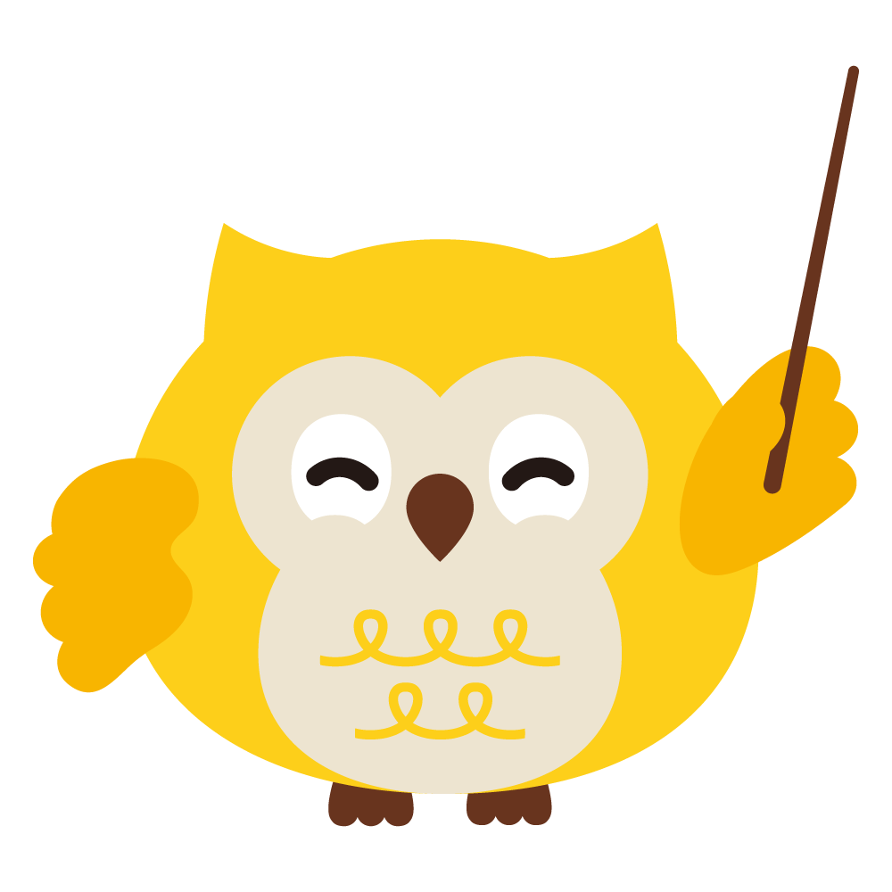

<!DOCTYPE html>
<html lang="ja">
<head>
<meta charset="UTF-8">
<meta name="viewport" content="width=device-width, initial-scale=1.0">
<title>車椅子タイプ診断｜自走式・介助式のどちらが合う？ - 介福本舗</title>
<style>
  /* 介福本舗ブランドカラーをベースにした洗練されたUIパレット */
  :root {
    --brown: #67341e;         /* プライマリテキスト / ヘッダー */
    --brown-soft: #7d5238;
    --gold: #fdd014;          /* プライマリアクセント */
    --gold-dark: #e0ad00;
    --gold-bg: #fffdf8;
    --orange: #ea580c;        /* セカンダリアクセント / 自走式・メインボタン */
    --orange-bg: #fff7ed;
    --orange-border: #fdba74;
    --indigo: #2563eb;        /* 介助式用ブランドブルー */
    --indigo-bg: #f0f7ff;
    --indigo-border: #93c5fd;
    --amber: #8a5a2e;         /* 警告・Notice用 */
    --amber-bg: #fbf1de;
    --amber-border: #d9a860;
    --ink: #292524;           /* 基本テキスト */
    --sub: #57534e;           /* サブテキスト */
    --muted: #78716c;         /* ミュートテキスト */
    --line: #e7e5e4;          /* ボーダー線 */
    --panel: #fafaf9;         /* 薄いパネル背景 */
    --panel2: #f5f5f4;        /* 濃いパネル背景 */
    --bg-color: #fbfbf9;      /* ページ全体の背景（極薄ベージュ） */
  }
  
  * { box-sizing: border-box; }
  
  body {
    margin: 0;
    font-family: "Noto Sans JP", -apple-system, BlinkMacSystemFont, "Segoe UI", Roboto, "Hiragino Kaku Gothic ProN", sans-serif;
    background: var(--bg-color);
    color: var(--ink);
    padding: 32px 16px 80px;
    line-height: 1.6;
  }
  
  .wrap {
    max-width: 600px;
    margin: 0 auto;
  }
  
  /* カードレイアウト */
  .card {
    background: #fff;
    border: 1px solid var(--line);
    border-radius: 20px;
    padding: 32px 24px;
    box-shadow: 0 10px 25px -5px rgba(103, 52, 30, 0.04), 0 8px 10px -6px rgba(103, 52, 30, 0.02);
    transition: transform 0.2s ease;
  }

  /* スタート画面専用スタイル */
  .start-header {
    text-align: center;
    margin-bottom: 20px;
  }
  .start-header h1 {
    font-size: 1.8rem;
    font-weight: 800;
    color: var(--brown);
    margin: 0 0 8px;
    line-height: 1.3;
  }
  .start-header p {
    font-size: 0.9rem;
    color: var(--brown-soft);
    margin: 0;
    font-weight: 500;
  }
  
  /* 福介のヒーロー表示 */
  .start-fukusuke-hero {
    display: flex;
    flex-direction: column;
    align-items: center;
    justify-content: center;
    margin-bottom: 24px;
  }
  .start-fukusuke-img-wrap {
    position: relative;
    width: 180px;
    height: 180px;
    display: flex;
    align-items: center;
    justify-content: center;
  }
  .start-fukusuke-img-bg {
    position: absolute;
    width: 100%;
    height: 100%;
    background: radial-gradient(#fff7d6 0%, transparent 70%);
    z-index: 1;
    border-radius: 50%;
  }
  .start-fukusuke-img {
    position: relative;
    max-width: 160px;
    width: 100%;
    height: auto;
    z-index: 2;
    object-fit: contain;
  }

  /* 注意事項カード（極薄パステル・枠線排除） */
  .start-notice-card {
    background: #fff7ed;
    border-radius: 16px;
    padding: 20px;
    margin-bottom: 16px;
    text-align: left;
    box-shadow: 0 4px 12px rgba(234, 88, 12, 0.02);
  }
  .start-notice-card b {
    display: block;
    font-size: 0.95rem;
    font-weight: 700;
    color: #c96200;
    margin-bottom: 8px;
  }
  .start-notice-card p {
    margin: 0 0 10px;
    font-size: 0.88rem;
    color: var(--sub);
    line-height: 1.6;
  }
  .start-notice-card ul {
    margin: 0;
    padding-left: 20px;
  }
  .start-notice-card li {
    font-size: 0.86rem;
    color: var(--sub);
    line-height: 1.6;
    margin-bottom: 4px;
  }
  
  .start-notice-card.ref-card {
    background: var(--panel);
    border-radius: 16px;
    box-shadow: 0 4px 12px rgba(103, 52, 30, 0.01);
  }
  .start-notice-card.ref-card b {
    color: var(--brown);
  }
  .start-notice-card.ref-card p {
    color: var(--muted);
    margin-bottom: 0;
  }

  .start-btn-wrap {
    text-align: center;
    margin-top: 32px;
  }
  .start-btn {
    display: inline-flex;
    align-items: center;
    justify-content: center;
    gap: 8px;
    width: 100%;
    padding: 16px 24px;
    font-size: 1.15rem;
    font-weight: 700;
    color: #fff;
    background: linear-gradient(135deg, #ee7800, #c96200);
    border: none;
    border-radius: 99px;
    cursor: pointer;
    box-shadow: 0 6px 18px rgba(238, 120, 0, 0.25), 0 2px 4px rgba(238, 120, 0, 0.15);
    transition: all 0.25s cubic-bezier(0.4, 0, 0.2, 1);
  }
  .start-btn:hover {
    transform: translateY(-2px);
    box-shadow: 0 8px 22px rgba(238, 120, 0, 0.35);
  }
  .start-btn:active {
    transform: translateY(1px);
    box-shadow: 0 4px 10px rgba(238, 120, 0, 0.2);
  }
  
  /* プログレスバー */
  .progress {
    display: flex;
    flex-direction: column;
    gap: 8px;
    margin: 0 0 24px;
  }
  .progress-info {
    display: flex;
    justify-content: space-between;
    align-items: center;
    font-size: 0.82rem;
    font-weight: 700;
    color: var(--muted);
  }
  .progress-step-text {
    color: var(--brown);
    background: var(--gold-bg);
    padding: 3px 10px;
    border-radius: 99px;
    border: 1px solid #fde68a;
  }
  .progress-bar-container {
    width: 100%;
    height: 8px;
    background: var(--line);
    border-radius: 99px;
    overflow: hidden;
  }
  .progress-bar-fill {
    height: 100%;
    background: linear-gradient(90deg, var(--gold), var(--orange));
    border-radius: 99px;
    transition: width 0.4s cubic-bezier(0.4, 0, 0.2, 1);
  }

  /* 福介ナビゲーションヘッダー（吹き出しUI） */
  .fukusuke-nav {
    display: flex;
    gap: 16px;
    align-items: flex-start;
    margin-bottom: 24px;
    text-align: left;
  }
  .fukusuke-avatar-container {
    position: relative;
    flex-shrink: 0;
    width: 70px;
    height: 70px;
    background: radial-gradient(#fff7d6 0%, transparent 70%);
    border-radius: 50%;
    display: flex;
    align-items: center;
    justify-content: center;
  }
  .fukusuke-avatar-mini {
    width: 60px;
    height: 60px;
    object-fit: contain;
  }
  .fukusuke-bubble {
    position: relative;
    flex: 1;
    background: #fff;
    border: 1.5px solid var(--line);
    border-radius: 16px;
    padding: 18px;
    box-shadow: 0 4px 12px rgba(103, 52, 30, 0.02);
  }
  .fukusuke-bubble::before {
    content: "";
    position: absolute;
    left: -8px;
    top: 24px;
    width: 0;
    height: 0;
    border-top: 6px solid transparent;
    border-bottom: 6px solid transparent;
    border-right: 8px solid var(--line);
  }
  .fukusuke-bubble::after {
    content: "";
    position: absolute;
    left: -6px;
    top: 24px;
    width: 0;
    height: 0;
    border-top: 6px solid transparent;
    border-bottom: 6px solid transparent;
    border-right: 8px solid #fff;
  }
  @media (max-width: 480px) {
    .fukusuke-nav {
      flex-direction: column;
      align-items: center;
      gap: 12px;
    }
    .fukusuke-bubble::before, .fukusuke-bubble::after {
      display: none;
    }
  }

  .qno {
    display: inline-flex;
    align-items: center;
    font-size: 0.76rem;
    font-weight: 800;
    color: var(--brown);
    background: var(--panel2);
    border-radius: 6px;
    padding: 4px 10px;
    margin-bottom: 12px;
    letter-spacing: .05em;
  }
  .question {
    font-size: 1.2rem;
    line-height: 1.5;
    margin: 0 0 8px;
    font-weight: 700;
    color: var(--brown);
  }
  .question-sub {
    font-size: 0.86rem;
    color: var(--muted);
    margin: 0;
    line-height: 1.6;
  }
  .pre-note {
    font-size: 0.84rem;
    color: var(--sub);
    background: var(--panel2);
    border-radius: 12px;
    padding: 14px 16px;
    margin: 0 0 20px;
    line-height: 1.6;
  }
  
  /* 選択肢ボタン */
  .choices {
    display: flex;
    flex-direction: column;
    gap: 12px;
  }
  .choice-btn {
    display: flex;
    flex-direction: column;
    width: 100%;
    text-align: left;
    padding: 16px 44px 16px 20px;
    border-radius: 14px;
    border: 2px solid var(--line);
    background: #fff;
    color: var(--ink);
    cursor: pointer;
    transition: all 0.25s cubic-bezier(0.4, 0, 0.2, 1);
    box-shadow: 0 2px 4px rgba(0, 0, 0, 0.01);
    position: relative;
  }
  .choice-btn span:first-child {
    font-size: 1.05rem;
    font-weight: 700;
    line-height: 1.4;
    padding-right: 20px;
    color: var(--brown);
  }
  .choice-btn .sub {
    display: block;
    font-size: 0.84rem;
    color: var(--muted);
    margin-top: 6px;
    font-weight: 400;
    line-height: 1.5;
  }
  .choice-btn::after {
    content: "→";
    position: absolute;
    right: 20px;
    top: 50%;
    transform: translateY(-50%) translateX(10px);
    font-weight: 700;
    color: var(--orange);
    opacity: 0;
    transition: all 0.25s ease;
  }
  .choice-btn:hover {
    border-color: var(--gold-dark);
    background: var(--gold-bg);
    transform: translateY(-2px);
    box-shadow: 0 6px 16px rgba(253, 208, 20, 0.12);
  }
  .choice-btn:hover::after {
    opacity: 1;
    transform: translateY(-50%) translateX(0);
  }

  /* アコーディオン・チェックリスト */
  details.helper { margin-top: 24px; border-radius: 14px; box-shadow: 0 1px 3px rgba(0,0,0,0.02); }
  details.helper summary {
    cursor: pointer; list-style: none; display: flex; align-items: center; justify-content: space-between; gap: 10px;
    font-size: 0.9rem; font-weight: 700; color: var(--brown); background: var(--panel2);
    border: 1.5px solid var(--line); border-radius: 14px; padding: 14px 18px; transition: all 0.2s ease;
  }
  details.helper summary:hover { background: #ecdcc4; border-color: var(--brown-soft); }
  details.helper summary::-webkit-details-marker { display: none; }
  details.helper summary .tap-hint {
    font-size: 0.74rem; font-weight: 700; color: var(--brown); background: #fff;
    padding: 2px 8px; border-radius: 99px; border: 1px solid var(--line); flex-shrink: 0;
  }
  details.helper summary::after {
    content: ""; width: 8px; height: 8px; flex-shrink: 0;
    border-right: 2px solid currentColor; border-bottom: 2px solid currentColor;
    transform: rotate(45deg); transition: transform 0.25s ease;
  }
  details.helper[open] summary::after { transform: rotate(-135deg); }
  details.helper[open] summary { border-bottom-left-radius: 0; border-bottom-right-radius: 0; border-bottom: none; }
  
  .helper-body {
    font-size: 0.86rem; color: var(--sub); background: #fff;
    border: 1.5px solid var(--line); border-top: none;
    border-bottom-left-radius: 14px; border-bottom-right-radius: 14px; padding: 16px 20px 20px;
  }
  
  .checklist { display: flex; flex-direction: column; gap: 10px; margin-top: 12px; }
  .checklist label {
    display: flex; gap: 12px; align-items: flex-start; font-size: 0.86rem; color: var(--sub);
    line-height: 1.5; padding: 12px 14px; border: 1.5px solid var(--line); border-radius: 10px;
    background: var(--panel); cursor: pointer; transition: all 0.2s ease;
  }
  .checklist label:hover { background: var(--panel2); border-color: var(--muted); }
  .checklist label:has(input:checked) { background: var(--gold-bg); border-color: var(--gold-dark); font-weight: 600; color: var(--brown); }
  .checklist input { width: 16px; height: 16px; margin-top: 2px; accent-color: var(--orange); cursor: pointer; flex-shrink: 0; }
  
  .suggest-box {
    margin-top: 16px; background: var(--orange-bg); border: 1.5px solid var(--orange);
    border-radius: 12px; padding: 14px 16px; font-size: 0.86rem; color: var(--orange-dark); line-height: 1.6;
  }
  .suggest-box button {
    margin-top: 10px; display: inline-block; font-size: 0.82rem; font-weight: 700;
    color: #fff; background: var(--orange); border: none; border-radius: 40px;
    padding: 10px 18px; cursor: pointer; transition: 0.2s;
  }
  .suggest-box button:hover { background: var(--orange-dark); }

  .back-btn {
    display: inline-flex; align-items: center; gap: 6px; margin-top: 20px;
    font-size: 0.86rem; font-weight: 600; color: var(--muted); background: none;
    border: none; cursor: pointer; padding: 6px 12px; border-radius: 8px; transition: all 0.2s ease;
  }
  .back-btn:hover { color: var(--brown); background: var(--panel2); }

  /* 診断結果画面 */
  .result-card { text-align: center; padding: 36px 24px; }
  
  /* 結果画面での福介プレゼンテーション */
  .fukusuke-result-header {
    display: flex;
    align-items: center;
    gap: 16px;
    margin-bottom: 24px;
    justify-content: center;
    text-align: left;
  }
  .fukusuke-avatar-large-container {
    width: 80px;
    height: 80px;
    background: radial-gradient(#fff7d6 0%, transparent 70%);
    border-radius: 50%;
    display: flex;
    align-items: center;
    justify-content: center;
    flex-shrink: 0;
  }
  .fukusuke-avatar-large {
    width: 70px;
    height: 70px;
    object-fit: contain;
  }
  .fukusuke-speech-large {
    position: relative;
    background: var(--gold-bg);
    border: 1.5px solid #fcd34d;
    border-radius: 12px;
    padding: 12px 16px;
    font-size: 0.88rem;
    font-weight: 700;
    color: var(--brown);
    line-height: 1.5;
    box-shadow: 0 4px 10px rgba(253, 208, 20, 0.05);
  }
  .fukusuke-speech-large::before {
    content: "";
    position: absolute;
    left: -8px;
    top: 50%;
    transform: translateY(-50%);
    width: 0;
    height: 0;
    border-top: 6px solid transparent;
    border-bottom: 6px solid transparent;
    border-right: 8px solid #fcd34d;
  }
  .fukusuke-speech-large::after {
    content: "";
    position: absolute;
    left: -6px;
    top: 50%;
    transform: translateY(-50%);
    width: 0;
    height: 0;
    border-top: 6px solid transparent;
    border-bottom: 6px solid transparent;
    border-right: 8px solid var(--gold-bg);
  }
  @media (max-width: 480px) {
    .fukusuke-result-header {
      flex-direction: column;
      text-align: center;
      gap: 12px;
    }
    .fukusuke-speech-large::before, .fukusuke-speech-large::after {
      display: none;
    }
  }

  .result-badge { display: inline-block; font-size: 0.82rem; font-weight: 700; color: var(--muted); letter-spacing: .08em; margin-bottom: 8px; }
  .result-title { font-size: 1.8rem; font-weight: 800; margin: 0 0 16px; display: flex; align-items: center; justify-content: center; gap: 8px; line-height: 1.3; }
  .result-title::before, .result-title::after { content: "✦"; font-size: 1.2rem; opacity: 0.5; }
  .result-title.self { color: var(--orange); }
  .result-title.self::before, .result-title.self::after { color: var(--orange-border); }
  .result-title.help { color: var(--indigo); }
  .result-title.help::before, .result-title.help::after { color: var(--indigo-border); }
  
  .reason-box {
    text-align: left; background: var(--panel); border: 1px solid var(--line);
    border-radius: 12px; padding: 20px; margin: 20px 0;
  }
  .reason-title { font-size: 0.95rem; font-weight: 700; color: var(--ink); margin: 0 0 8px; display: flex; align-items: center; gap: 6px; }
  .reason-title::before { content: "📋"; }
  .result-reason { font-size: 0.95rem; color: var(--sub); line-height: 1.7; margin: 0; }
  
  .result-note {
    text-align: left; font-size: 0.86rem; color: var(--sub); background: var(--panel2);
    border-radius: 10px; padding: 14px 16px; margin: 16px 0; line-height: 1.6;
  }
  .result-note.warn {
    color: #9a3412; background: #fff7ed; border-left: 4px solid var(--orange); border-radius: 6px;
  }
  .result-note.warn b { display: block; font-size: 0.86rem; margin-bottom: 4px; color: var(--brown); }

  /* 商品カード (フレックスレイアウト化して画像エリアを確保) */
  .products { margin-top: 24px; display: flex; flex-direction: column; gap: 16px; }
  .product-card {
    display: flex;
    gap: 20px;
    border: 2px solid var(--line);
    border-radius: 16px;
    padding: 20px;
    text-decoration: none;
    color: inherit;
    background: #fff;
    text-align: left;
    transition: all 0.25s ease;
  }
  @media (max-width: 520px) {
    .product-card {
      flex-direction: column;
      gap: 16px;
    }
  }
  .product-card:hover { border-color: var(--orange-border); transform: translateY(-2px); box-shadow: 0 8px 16px rgba(234, 88, 12, 0.08); }
  .product-card.primary { border-color: var(--orange-border); background: var(--orange-bg); }
  .product-card.primary.help-type { border-color: var(--indigo-border); background: var(--indigo-bg); }
  .product-card.help-type:hover { border-color: var(--indigo-border); box-shadow: 0 8px 16px rgba(37, 99, 235, 0.08); }
  
  /* 画像エリア */
  .product-img-box {
    width: 120px;
    height: 120px;
    border-radius: 10px;
    background: #fff;
    border: 1px solid var(--line);
    display: flex;
    align-items: center;
    justify-content: center;
    overflow: hidden;
    flex-shrink: 0;
    position: relative;
  }
  .product-img-box img {
    max-width: 100%;
    max-height: 100%;
    object-fit: contain;
    padding: 6px;
  }
  .product-img-box.placeholder {
    background: var(--panel2);
    border-style: dashed;
    flex-direction: column;
    color: var(--muted);
    font-size: 0.72rem;
    font-weight: 700;
  }
  .product-img-box.placeholder .placeholder-icon {
    font-size: 1.5rem;
    margin-bottom: 4px;
    opacity: 0.7;
  }
  @media (max-width: 520px) {
    .product-img-box {
      width: 100%;
      height: 160px;
    }
  }

  /* コンテンツ詳細エリア */
  .product-details {
    flex: 1;
    display: flex;
    flex-direction: column;
  }
  
  .product-header { display: flex; justify-content: space-between; align-items: center; margin-bottom: 12px; }
  .product-tag { font-size: 0.72rem; font-weight: 700; color: #fff; background: var(--orange); border-radius: 6px; padding: 3px 8px; }
  .product-tag.help-type { background: var(--indigo); }
  
  .product-name { font-size: 1.08rem; font-weight: 700; margin: 0 0 8px; color: var(--ink); line-height: 1.4; }
  .product-feature { font-size: 0.86rem; color: var(--sub); margin: 0 0 12px; font-weight: 600;}
  .product-price { font-size: 1.15rem; font-weight: 800; color: #e11d48; margin: 0 0 12px;}
  
  .product-cta {
    display: flex; justify-content: center; align-items: center; gap: 8px; font-size: 0.92rem; font-weight: 700;
    color: #fff; background: var(--orange); border-radius: 10px; padding: 10px; transition: all 0.2s ease;
    margin-top: auto;
  }
  .product-card.help-type .product-cta { background: var(--indigo); }
  .product-card:hover .product-cta { transform: scale(1.01); }

  /* 介助式任意チェック結果 */
  .checklist-result { margin-top: 12px; font-size: 0.86rem; color: var(--indigo); background: var(--indigo-bg); border:1px solid var(--indigo-border); border-radius: 12px; padding: 14px; line-height: 1.7; display: none; text-align: left; }
  .checklist-result.show { display: block; }
  .checklist-result ul { margin: 8px 0 0; padding-left: 20px; }

  .restart-btn {
    display: block; width: 100%; margin-top: 28px; padding: 16px; border-radius: 12px;
    border: 2px solid var(--line); background: #fff; color: var(--sub); font-size: 0.95rem; font-weight: 700; cursor: pointer; transition: all 0.2s ease;
  }
  .restart-btn:hover { background: var(--panel2); color: var(--ink); border-color: var(--muted); }

  footer.page { max-width: 600px; margin: 32px auto 0; font-size: 0.8rem; color: var(--muted); line-height: 1.6; text-align: center; }
</style>
</head>
<body>
<div class="wrap">
  <!-- プログレスバーエリア（スタート画面・結果画面ではJSで非表示制御） -->
  <div id="progressArea"></div>
  
  <!-- アプリ描画エリア -->
  <div id="app"></div>
  
  <footer class="page">
    この診断結果はあくまで参考です。ご心配な点があれば、福祉用具専門相談員にご相談ください。
  </footer>
</div>

<script>
(function(){

  // ---- Product catalog ----
  var PRODUCTS = {
    selfStandard: { name:"TORICO よかセレクト 自走式 TRC22-SL-001", feature:"軽量・コンパクト", price:"26,800円", url:"https://item.rakuten.co.jp/kaifukuhonpo/kurumaisu-0002/", type:"self", imgUrl:"images/よかセレクト（自走式）_背景透過.png" },
    selfMulti:  { name:"TORICO よかべスター 自走式 TRC22-BS-001", feature:"多機能（肘跳ね上げ・脚部スイングアウト）", price:"34,800円", url:"https://item.rakuten.co.jp/kaifukuhonpo/kurumaisu-0001/", type:"self", imgUrl:"images/よかベスター（自走式）_赤（背景透過）png.png" },
    helpStandard: { name:"TORICO よかセレクト 介助式 TRC16-SL-001", feature:"軽量・コンパクト", price:"26,800円", url:"https://item.rakuten.co.jp/kaifukuhonpo/kurumaisu-0003/", type:"help", imgUrl:"images/よかセレクト（介助式）_背景透過2.png" },
    helpMulti:  { name:"TORICO よかべスター 介助式 TRC16-BS-001", feature:"多機能（肘掛け跳ね上げ＋脚部開閉・背張り調整）", price:"34,800円", url:"https://item.rakuten.co.jp/kaifukuhonpo/kurumaisu-0008/", type:"help", imgUrl:"images/よかベスター（介助式）_オレンジ（背景透過）.png" },
    helpUltra:  { name:"カワムラサイクル 旅ぐるま KA6", feature:"より軽量・小型（シートベルト無し）", price:"37,800円", url:"https://item.rakuten.co.jp/kaifukuhonpo/kurumaisu-0006/", type:"help", imgUrl:"" }
  };

  // ---- 身体チェック項目 ----
  var BODY_CHECK_ITEMS = [
    { label:"座ったときのバランス", detail:"支えなしで座った姿勢を保てる、かがんでも自分で戻れる" },
    { label:"手の力", detail:"ペットボトルのフタを開けられる、タオルをしっかり握れる（ブレーキ操作にも関わります）" },
    { label:"腕を動かす力と範囲", detail:"腕を前後に繰り返し動かしても、肩・肘・手首に痛みが出ない" },
    { label:"繰り返しても疲れないか", detail:"同じ動作を繰り返してもすぐには疲れない（持久力）" }
  ];

  // ---- 介助式・任意チェックリスト ----
  var HELP_CHECK_ITEMS = [
    { key:"transfer", label:"ベッドや車から車椅子への移乗が多い", feature:"肘掛け跳ね上げ＋脚部開閉で移乗動作がしやすくなります" },
    { key:"posture",  label:"円背（背中が丸まっている）や姿勢保持に不安がある", feature:"背張り調整機能で楽な姿勢を保てます" },
    { key:"back",     label:"介助者に腰痛など身体的負担がある", feature:"後輪が座面より低い構造で、押す・移乗させる動作の負担が軽くなります" },
    { key:"rain",     label:"雨天や屋外での使用が多い", feature:"ドラムブレーキで雨天でも安定して効きます" },
    { key:"long",     label:"外出頻度が高く、長時間座ることが多い", feature:"クッション性・各種調整機能で疲れにくくなります" }
  ];

  // ---- 状態管理 ----
  function freshState(){
    return {
      step: "start",    // 初期状態はスタート画面
      group: null,      // "self" | "help"
      reason: null,     // "always" | "I" | "II-yes" | "II-no" | "III" | "IV" | "V"
      qtype: null,      // "standard" | "multi"
      backFrom: null,
      totalSteps: 2,
      bodyCheckUsed: false,
      bodyCheckCount: 0
    };
  }
  var state = freshState();

  var app = document.getElementById("app");
  var progressArea = document.getElementById("progressArea");

  var STEP_DEPTH = { q1:1, q1b:2, q1b2:3, q2:99, result:0 }; 

  function renderProgress(){
    // スタート画面と結果画面ではプログレスバーを隠す
    if(state.step === "start" || state.step === "result"){ 
      progressArea.innerHTML = ""; 
      return; 
    }
    
    var current = (state.step === "q2") ? state.totalSteps : STEP_DEPTH[state.step];
    var percent = Math.round((current / state.totalSteps) * 100);
    
    var html = '<div class="progress">';
    html += '<div class="progress-info">';
    html += '<span class="progress-step-text">質問 ' + current + ' / ' + state.totalSteps + '</span>';
    html += '<span class="progress-percentage">' + percent + '% 完了</span>';
    html += '</div>';
    html += '<div class="progress-bar-container">';
    html += '<div class="progress-bar-fill" style="width: ' + percent + '%;"></div>';
    html += '</div></div>';
    
    progressArea.innerHTML = html;
  }

  // 質問カード描画関数
  function qCard(qno, question, questionSub, preNoteHtml, choices, helperHtml, backTo){
    var html = '<div class="card">';
    
    // 福介ナビゲーションヘッダー（吹き出しUI）
    html += '<div class="fukusuke-nav">';
    html += '  <div class="fukusuke-avatar-container">';
    html += '    ';
    html += '  </div>';
    html += '  <div class="fukusuke-bubble">';
    html += '    <span class="qno">'+qno+'</span>';
    html += '    <p class="question">'+question+'</p>';
    if(questionSub) html += '    <p class="question-sub">'+questionSub+'</p>';
    html += '  </div>';
    html += '</div>';

    if(preNoteHtml) html += '<div class="pre-note">'+preNoteHtml+'</div>';
    html += '<div class="choices">';
    choices.forEach(function(c, idx){
      html += '<button class="choice-btn" data-idx="'+idx+'"><span>'+c.label+'</span>';
      if(c.sub) html += '<span class="sub">'+c.sub+'</span>';
      html += '</button>';
    });
    html += '</div>';
    if(helperHtml) html += helperHtml;
    if(backTo) html += '<button class="back-btn" id="backBtn">← 前の画面に戻る</button>';
    html += '</div>';
    app.innerHTML = html;

    var btns = app.querySelectorAll(".choice-btn[data-idx]");
    btns.forEach(function(btn){
      btn.addEventListener("click", function(){
        choices[parseInt(btn.getAttribute("data-idx"),10)].onSelect();
        render();
      });
    });
    if(backTo){
      document.getElementById("backBtn").addEventListener("click", function(){
        state.step = backTo;
        render();
      });
    }
  }

  function render(){
    renderProgress();
    window.scrollTo({ top: 0, behavior: 'smooth' });

    // 【1】スタート画面
    if(state.step === "start"){
      var html = '<div class="card">';
      html += '<div class="start-header">';
      html += '<h1>車椅子タイプ診断</h1>';
      html += '<p>かんたん1分｜福介があなたにピッタリのタイプをご案内します！</p>';
      html += '</div>';
      
      html += '<div class="start-fukusuke-hero">';
      html += '  <div class="start-fukusuke-img-wrap">';
      html += '    <div class="start-fukusuke-img-bg"></div>';
      html += '    ';
      html += '  </div>';
      html += '</div>';
      
      html += '<div class="start-notice-card">';
      html += '<b>💡 ご利用前の大切なご確認</b>';
      html += '<p>次に該当する方は、一般的な手動車椅子が適さない可能性があるため、専門相談員へ直接ご相談ください。</p>';
      html += '<ul>';
      html += '  <li>寝たきりの方</li>';
      html += '  <li>自力で座った姿勢（座位）を保つのが難しい方</li>';
      html += '  <li>足に拘縮や変形がある方</li>';
      html += '</ul>';
      html += '</div>';

      html += '<div class="start-notice-card ref-card">';
      html += '<b>📋 あくまで参考としてご利用ください</b>';
      html += '<p>この診断は目安であり、医療的な判定ではありません。ご心配な点がある場合は、購入前に専門相談員にご相談ください。</p>';
      html += '</div>';

      html += '<div class="start-btn-wrap">';
      html += '<button class="start-btn" id="startBtn">診断をスタートする <span>→</span></button>';
      html += '</div>';
      
      html += '<p style="font-size: 0.78rem; color: #a6876a; text-align: center; margin-top: 16px; line-height: 1.5;">' +
              '※この診断は目安であり医療的な判定ではありません。ご心配な点は購入前に専門相談員にご相談ください。</p>';
              
      html += '</div>';
      
      app.innerHTML = html;
      document.getElementById("startBtn").addEventListener("click", function(){
        state.step = "q1";
        render();
      });
      return;
    }

    // 【2】Q1
    if(state.step === "q1"){
      var checklistHtml = "";
      BODY_CHECK_ITEMS.forEach(function(item, i){
        checklistHtml += '<label><input type="checkbox" data-chk="'+i+'"><span>'+item.detail+'<br><small>（'+item.label+'に不安がある）</small></span></label>';
      });
      var helper =
        '<details class="helper"><summary><span>💡 自信がない方は「身体チェック」</span><span class="tap-hint">タップして開く</span></summary>' +
        '<div class="helper-body">' +
        '<p style="margin-top:0;">次の4項目が自走式を無理なく利用できる目安です。不安に感じる項目があればチェックしてください。</p>' +
        '<div class="checklist">' + checklistHtml + '</div>' +
        '<div id="bodyCheckSuggest"></div>' +
        '<div class="helper-note" style="margin-bottom:0;">※医療的診断ではなく目安です。不安が1つの場合は、結果で軽量タイプを優先してご案内します。</div>' +
        '</div></details>';

      qCard("Q1", "車椅子は誰が操作しますか？", null, null, [
        { label:"常に介助者が操作する", sub:"介助式グループへ（このままQ2へ）",
          onSelect:function(){ state.group="help"; state.reason="always"; state.totalSteps=2; state.step="q2"; state.backFrom="q1"; } },
        { label:"乗る人自身が操作する", sub:"使用シーンを確認するQ1-bへ",
          onSelect:function(){ state.step="q1b"; } }
      ], helper, "start");

      var boxes = app.querySelectorAll('.checklist input[type="checkbox"]');
      boxes.forEach(function(b){
        b.addEventListener("change", function(){
          var all = app.querySelectorAll('.checklist input[type="checkbox"]');
          var count = 0;
          all.forEach(function(x){ if(x.checked) count++; });
          state.bodyCheckUsed = true;
          state.bodyCheckCount = count;
          var suggest = document.getElementById("bodyCheckSuggest");
          if(count >= 2){
            suggest.innerHTML = '<div class="suggest-box">座位や腕の力、ブレーキ操作など複数の項目に不安があるようです。この場合は「常に介助者が操作する」への変更をおすすめします。' +
              '<button id="switchToHelper">常に介助者が操作するに変更する</button></div>';
            document.getElementById("switchToHelper").addEventListener("click", function(){
              state.group="help"; state.reason="always"; state.totalSteps=2; state.step="q2"; state.backFrom="q1";
              render();
            });
          } else { suggest.innerHTML = ""; }
        });
      });
      return;
    }

    // 【3】Q1-b
    if(state.step === "q1b"){
      var preNote = "自走式は、こぐためのハンドリムがある分だけ介助式より一回り大きく、重くなります。『思ったより大きかった』『重たかった』というお声をいただくこともあるため、以下の質問で実際の使用シーンを確認しておくと安心です。";
      qCard("Q1-b", "車椅子を使う主な場面は？", "「乗る人自身が操作する」と答えた方への確認です。", preNote, [
        { label:"屋内外問わず、日常的にいろいろな場面で自分で動きたい", sub:"買い物・散歩・庭先の移動など",
          onSelect:function(){ state.group="self"; state.reason="I"; state.totalSteps=3; state.step="q2"; state.backFrom="q1b"; } },
        { label:"外出はほとんど付き逃ってもらうが、自宅の中だけは自分で移動したい", sub:"家族を呼ばずに屋内だけ自走したい",
          onSelect:function(){ state.totalSteps=4; state.step="q1b2"; } },
        { label:"通院やデイサービスの送迎など、決まった外出の時だけ使う予定", sub:"普段は杖や伝い歩きある程度歩ける",
          onSelect:function(){ state.group="help"; state.reason="III"; state.totalSteps=3; state.step="q2"; state.backFrom="q1b"; } },
        { label:"家族との買い物・外食・旅行などたまの外出で使う予定", sub:"普段の歩行には不安がある",
          onSelect:function(){ state.group="help"; state.reason="IV"; state.totalSteps=3; state.step="q2"; state.backFrom="q1b"; } },
        { label:"まだ使う場面がはっきり決まっていない・その他",
          onSelect:function(){ state.group="self"; state.reason="V"; state.totalSteps=3; state.step="q2"; state.backFrom="q1b"; } }
      ], null, "q1");
      return;
    }

    // 【4】Q1-b-II
    if(state.step === "q1b2"){
      qCard("Q1-b-II", "自宅の中は、車椅子を使わずに移動できますか？", "杖や伝い歩き、手すり、スロープなどを使った場合を想定してお答えください。", null, [
        { label:"できる", sub:"車椅子がなくても室内は移動できる",
          onSelect:function(){ state.group="help"; state.reason="II-yes"; state.step="q2"; state.backFrom="q1b2"; } },
        { label:"できない", sub:"車椅子がないと室内移動が難しい",
          onSelect:function(){ state.group="self"; state.reason="II-no"; state.step="q2"; state.backFrom="q1b2"; } }
      ], null, "q1b");
      return;
    }

    // 【5】Q2
    if(state.step === "q2"){
      qCard("Q2", "移乗（車椅子⇄ベッド・トイレなど）は自分で立ち上がってできますか？",
        "自走式・介助式共通の質問です。標準型／多機能型の判定に使います。", null,
        [
          { label:"自分で立ち上がって移乗できる", sub:"手すりや肘掛けにつかまれば見守りだけで足りる", onSelect:function(){ state.qtype="standard"; state.step="result"; render(); } },
          { label:"立ち上がるのが難しく、移乗が大変", sub:"介助者が体を支えるなど身体的な介助が必要", onSelect:function(){ state.qtype="multi"; state.step="result"; render(); } }
        ], null, state.backFrom);
      return;
    }

    // 【6】結果画面
    if(state.step === "result"){
      renderResult();
      return;
    }
  }

  var REASON_TEXT = {
    "always": "常に介助者が車椅子を操作されるとのことですので、介助式のグループでご案内します。",
    "I":      "屋内外問わず日常的に自分の力で動きたいとのことですので、自走ニーズが明確です。自走式のままご案内します。",
    "V":      "まだ使う場面が決まっていないとのことですので、どちらかに無理に誘導せず、自走式のままご案内します。",
    "III":    "通院やデイサービスなど決まった外出だけで、普段はある程度歩けるとのことですので、自走機能を使う場面は実はあまり多くないと考えられます。実際に専門の相談員が詳しくお話をうかがうと、このようなケースでは介助式の方が使いやすいという結論になることが多くあります。軽量な介助式であれば、いざという時の介助者の負担も少なく済みます。",
    "IV":     "たまの外出であれば、ご家族が近くにいることが多いと考えられます。その場合、自走式の幅・重さがかえって取り回しの負担になることがあり、実際のご相談でも介助式の方が扱いやすいという結論になるケースが多くあります。",
    "II-yes": "室内は車椅子がなくても移動できるとのことですので、車椅子そのものを自宅内で自走する場面は実はあまり多くないと考えられます。外出時は付き添いが前提であれば、介助式の方が扱いやすく、いざという時の介助者の負担も少なく済みます。",
    "II-no":  "自宅の中で車椅子がないと移動が難しいとのことですので、屋内での自走ニーズがあると考えられます。自走式のままご案内します。"
  };

  function productCard(p, tagLabel, isPrimary){
    var typeClass = p.type === "help" ? " help-type" : "";
    var cardClass = "product-card" + (isPrimary ? " primary" + typeClass : "");
    var tagClass = "product-tag" + typeClass;

    var imgHtml = "";
    if (p.imgUrl) {
      imgHtml = '<div class="product-img-box">' +
        '' +
        '</div>';
    } else {
      imgHtml = '<div class="product-img-box placeholder">' +
        '<span class="placeholder-icon">📷</span>' +
        '<span class="placeholder-text">画像準備中</span>' +
        '</div>';
    }

    return '<a class="'+cardClass+'" href="'+p.url+'" target="_blank" rel="noopener">' +
      imgHtml +
      '<div class="product-details">' +
      '  <div class="product-header"><span class="'+tagClass+'">'+tagLabel+'</span></div>' +
      '  <p class="product-name">'+p.name+'</p>' +
      '  <p class="product-feature">特徴：'+p.feature+'</p>' +
      '  <p class="product-price">'+p.price+'</p>' +
      '  <div class="product-cta"><span>楽天市場店で見る</span><span class="cta-arrow">→</span></div>' +
      '</div>' +
      '</a>';
  }

  function renderResult(){
    var isSelf = state.group === "self";
    var isMulti = state.qtype === "multi";
    var title = isSelf ? "自走式" : "介助式";
    var titleClass = isSelf ? "result-title self" : "result-title help";
    var subTitle = isMulti ? "多機能型（よかべスター）" : "標準型（よかセレクト）";

    var html = '<div class="card result-card">';
    
    // 福介結果プレゼンテーション
    html += '<div class="fukusuke-result-header">';
    html += '  <div class="fukusuke-avatar-large-container">';
    html += '    ';
    html += '  </div>';
    html += '  <div class="fukusuke-speech-large">';
    html += '    <p>診断結果が出ました！<br>あなたにぴったりの車椅子はこちらです♪</p>';
    html += '  </div>';
    html += '</div>';

    html += '<span class="result-badge">診断結果</span>';
    html += '<h2 class="'+titleClass+'">'+title+'<br><span style="font-size:1.2rem; margin-top:8px;">'+subTitle+'</span></h2>';
    
    html += '<div class="reason-box">';
    html += '<p class="reason-title">診断結果の理由</p>';
    html += '<p class="result-reason">'+(REASON_TEXT[state.reason]||"")+'</p>';
    html += '<p class="result-reason" style="margin-top:10px; padding-top:10px; border-top:1px dashed var(--line);">判断の境界線：介助者が身体的に支える必要があるかどうか。<br>' +
      (isMulti ? "肘跳ね上げ等の機構で移乗をサポートする多機能型が向いています。" : "見守りだけで足りるため、標準型で十分です。") + '</p>';
    html += '</div>';

    if(!isSelf && (state.reason==="III" || state.reason==="IV" || state.reason==="II-yes")){
      html += '<div class="result-note">結果に納得できない場合のために、<a href="'+PRODUCTS.selfStandard.url+'" target="_blank" rel="noopener" style="color:var(--orange); font-weight:bold;">自走式の商品ページ</a>もあわせてご案内します。</div>';
    }

    if(state.reason === "II-no"){
      html += '<div class="result-note warn"><b>屋内での取り回しについて</b>自走式はハンドリムの分だけ幅を取り、屋内の狭い場所では小回りが利きにくい点にご注意ください。通路幅・回転スペースを事前にご確認いただくと安心です。</div>';
    }

    if(isSelf && state.bodyCheckUsed && state.bodyCheckCount === 1){
      html += '<div class="result-note">身体チェックで気になる項目が1つあったため、通常タイプより軽量・コンパクトなモデルを優先してご案内します。</div>';
    }

    if(isSelf){
      html += '<div class="result-note warn"><b>①サイズ・設置場所のご確認</b>ご購入前に、実際に車椅子を使う場所（玄関・廊下の幅など）や、車に載せる場合はトランクのサイズもあわせてご確認ください。</div>';
    }

    // ---- 商品の出し分け ----
    html += '<div class="products">';
    if(isSelf){
      var preferLight = state.bodyCheckUsed && state.bodyCheckCount === 1;
      if(isMulti){
        html += productCard(PRODUCTS.selfMulti, "一番おすすめ", true);
      } else {
        html += productCard(PRODUCTS.selfStandard, "一番おすすめ", true);
        if(!preferLight){ html += productCard(PRODUCTS.selfMulti, "多機能タイプをご検討の方に", false); }
      }
    } else {
      if(isMulti){
        html += productCard(PRODUCTS.helpMulti, "一番おすすめ", true);
      } else {
        html += productCard(PRODUCTS.helpStandard, "一番おすすめ", true);
        // IVの場合のみ、旅ぐるまKA6を参考提示
        if(state.reason === "IV"){
          html += productCard(PRODUCTS.helpUltra, "旅行等で念のため持っていきたい方に（普段使いには非推奨）", false);
        }
      }
    }
    html += '</div>';

    if(isSelf){
      html += '<div class="result-note warn" style="margin-top:24px;"><b>②今後の身体状況の変化について</b>今のところ自走式が合っていても、今後身体状況が変わる可能性がある場合は、将来的に介助式への切り替えが必要になることがあります。ご不安な場合は福祉用具専門相談員にご相談ください。</div>';
    }

    // ---- 介助式：任意チェックリスト ----
    if(!isSelf){
      var itemsHtml = "";
      HELP_CHECK_ITEMS.forEach(function(item){
        itemsHtml += '<label><input type="checkbox" data-help-chk="'+item.key+'"> <span>'+item.label+'</span></label>';
      });
      html += '<details class="helper" style="text-align:left; margin-top:32px;" open><summary><span>さらに自分に合うタイプを探す（任意）</span></summary>' +
        '<div class="helper-body">' +
        '<p style="margin-top:0;">当てはまる項目があれば教えてください。多機能型（よかべスター）が向いているかどうかをより具体的に確認できます。※チェックしなくても上記の結果は変わりません。</p>' +
        '<div class="checklist">' + itemsHtml + '</div>' +
        '<div class="checklist-result" id="helpChecklistResult"></div>' +
        '</div></details>';
    }

    html += '<button class="restart-btn" id="restartBtn">最初からやり直す</button>';
    html += '</div>';
    app.innerHTML = html;

    // 介助式任意チェックのイベントリスナー
    if(!isSelf){
      var helpBoxes = app.querySelectorAll('.checklist input[data-help-chk]');
      helpBoxes.forEach(function(b){
        b.addEventListener("change", function(){
          var checked = [];
          helpBoxes.forEach(function(x){
            if(x.checked){
              var found = HELP_CHECK_ITEMS.filter(function(it){ return it.key === x.getAttribute("data-help-chk"); })[0];
              if(found) checked.push(found);
            }
          });
          var resultEl = document.getElementById("helpChecklistResult");
          if(checked.length === 0){
            resultEl.className = "checklist-result";
            resultEl.innerHTML = "";
            return;
          }
          var listHtml = "<ul>" + checked.map(function(it){ return "<li>"+it.feature+"</li>"; }).join("") + "</ul>";
          if(isMulti){
            resultEl.innerHTML = "<b>多機能型（よかべスター）が向いている理由</b>" + listHtml;
          } else {
            resultEl.innerHTML = "移乗のしやすさ以外にも当てはまる点があるようです。<b>多機能型（よかべスター 介助式）</b>も候補に加えてご検討ください。" + listHtml;
          }
          resultEl.className = "checklist-result show";
        });
      });
    }

    document.getElementById("restartBtn").addEventListener("click", function(){
      state = freshState();
      render();
    });
  }

  render();
})();
</script>
</body>
</html>
